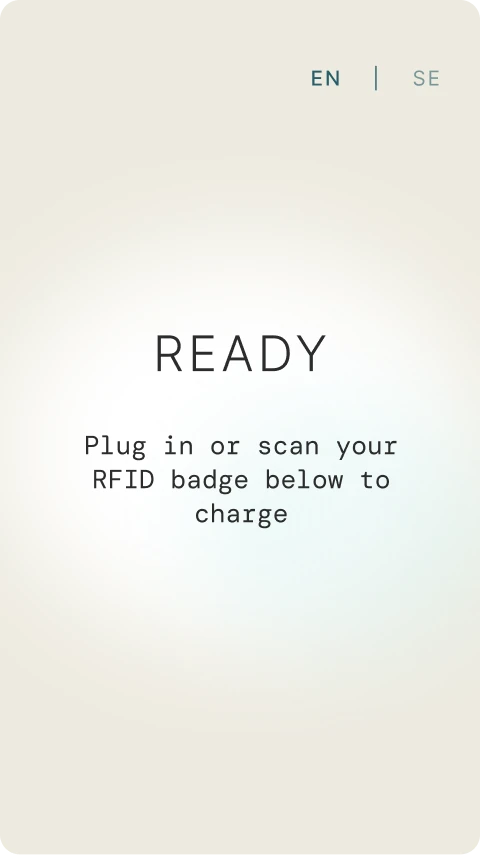

The experience
Make the current charging state clear at a glance.
The supplied screens show a session from the start state through active charging to completion. The interface surfaces progress and session information at each stage.

Confidential charging interface · March 2026–present
A charging experience designed to make session status easy to read across a vehicle display and a companion mobile view.
The experience
The supplied screens show a session from the start state through active charging to completion. The interface surfaces progress and session information at each stage.
My contribution
My CV describes work spanning UX research, interface design, frontend implementation, usability testing, and evaluation on target hardware. Project and employer details remain confidential.



A companion view
The supplied mobile visual presents charging progress and session details in a handheld context.